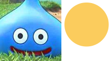

background是一个读取背景地址，呈现于元素底层的属性。
示例
html
<div class="box url"></div>
css
.url{
background-image:url('../../assets/test.png');
}
此属性在css中还有一种混合写法
background:url(ASSETS_PATH);
几个image可以在一个属性中混合使用。要注意的是既然是混合写法，那么就会有展示层级。层级规则为书写从左往右，展示层级则从上到下。
示例
html
<div class='box more'></div>
css
.more{
background-image:url('../../assets/star.png'),url('../../assets/test.png');
}
本文所使用的图片全部面貌为：

如果我们希望图片只展示右侧的圆，那么我们如何去做。
示例
html
<div class='box sprite'></div>
css
.sprite{
background-image:url('../../assets/test.png');
background-position: -120px 0;
background-repeat:no-repeat;
}
这里我们涉及到的background-position和background-repeat属性后面的章节会讲到。